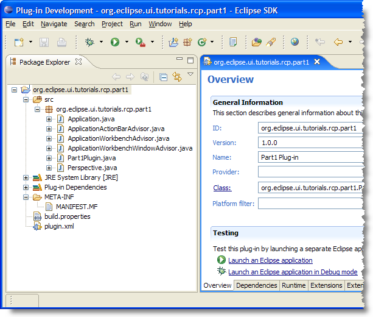
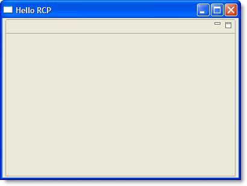

| Eclipse Article |

The Rich Client Platform (RCP) is an exciting new way to build Java applications that can compete with native applications on any platform. This tutorial is designed to get you started building RCP applications quickly. It has been updated for Eclipse 3.1.2
By Ed Burnette, SAS
July 28, 2004
Updated for 3.1.2: February 6, 2006
Try this experiment: Show Eclipse to some friends or co-workers who haven't seen it before and ask them to guess what language it is written in. Chances are, they'll guess VB, C++, or C#, because those languages are used most often for high quality client side applications. Then watch the look on their faces when you tell them it was created in Java, especially if they are Java programmers.
Because of its unique open source license, you can use the technologies that went into Eclipse to create your own commercial quality programs. Before version 3.0, this was possible but difficult, especially when you wanted to heavily customize the menus, layouts, and other user interface elements. That was because the "IDE-ness" of Eclipse was hard-wired into it. Version 3.0 introduced the Rich Client Platform (RCP), which is basically a refactoring of the fundamental parts of Eclipse's UI, allowing it to be used for non-IDE applications. Version 3.1 updated RCP with new capabilities, and, most importantly, new tooling support to make it easier to create than before.
If you want to cut to the chase and look at the code for this part you can find it in the accompanying zip file. Otherwise, let's take a look at how to construct an RCP application.
RCP applications are based on the familiar Eclipse plug-in architecture, (if it's not familiar to you, see the references section). Therefore, you'll need to create a plug-in to be your main program. Eclipse's Plug-in Development Environment (PDE) provides a number of wizards and editors that take some of the drudgery out of the process. PDE is included with the Eclipse SDK download so that is the package you should be using. Here are the steps you should follow to get started.
First, bring up Eclipse and select File > New > Project, then expand Plug-in Development and double-click Plug-in Project to bring up the Plug-in Project wizard. On the subsequent pages, enter a Project name such as org.eclipse.ui.tutorials.rcp.part1, indicate you want a Java project, select the version of Eclipse you're targeting (at least 3.1), and enable the option to Create an OSGi bundle manifest. Then click Next >.
 Beginning in Eclipse 3.1 you will get best results by using the OSGi
bundle manifest. In contrast to previous versions, this is now the
default.
Beginning in Eclipse 3.1 you will get best results by using the OSGi
bundle manifest. In contrast to previous versions, this is now the
default.
In the next page of the Wizard you can change the Plug-in ID and other parameters. Of particular importance is the question, "Would you like to create a rich client application?". Select Yes. The generated plug-in class is optional but for this example just leave all the other options at their default values. Click Next > to continue.
 If
you get a dialog asking if Eclipse can switch to the Plug-in Development
Perspective click Remember my decision and select Yes (this is
optional).
If
you get a dialog asking if Eclipse can switch to the Plug-in Development
Perspective click Remember my decision and select Yes (this is
optional).
Starting with Eclipse 3.1, several templates have been provided to make creating an RCP application a breeze. We'll use the simplest one available and see how it works. Make sure the option to Create a plug-in using one of the templates is enabled, then select the Hello RCP template. This is RCP's equivalent of "Hello, world". Click Finish to accept all the defaults and generate the project (see Figure 1). Eclipse will open the Plug-in Manifest Editor. The Plug-in Manifest editor puts a friendly face on the various configuration files that control your RCP application.

Figure 1. The Hello World RCP project was created by a PDE wizard.
Trying out RCP applications used to be somewhat tedious. You had to create a custom launch configuration, enter the right application name, and tweak the plug-ins that were included. Thankfully the PDE keeps track of all this now. All you have to do is click on the Launch an Eclipse Application button in the Plug-in Manifest editor's Overview page. You should see a bare-bones Workbench start up (see Figure 2).
Figure 2. By using the templates you can be up and running an RCP application in minutes.
In Eclipse terms a product is everything that goes with your application, including all the other plug-ins it depends on, a command to run the application (called the native launcher), and any branding (icons, etc.) that make your application distinctive. Although as we've just seen you can run a RCP application without defining a product, having one makes it a whole lot easier to run the application outside of Eclipse. This is one of the major innovations that Eclipse 3.1 brought to RCP development.
Some of the more complicated RCP templates already come with a product defined, but the Hello RCP template does not so we'll have to make one.
In order to create a product, the easiest way is to add a product configuration file to the project. Right click on the plug-in project and select New > Product Configuration. Then enter a file name for this new configuration file, such as part1.product. Leave the other options at their default values. Then click Finish. The Product Configuration editor will open. This editor lets you control exactly what makes up your product including all its plug-ins and branding elements.
In the Overview page, select the New... button to create a new product extension. Type in or browse to the defining plug-in (org.eclipse.ui.tutorials.rcp.part1). Enter a Product ID such as product, and for the Product Application select org.eclipse.ui.tutorials.rcp.part1.application. Click Finish to define the product. Back in the Overview page, type in a new Product Name, for example RCP Tutorial 1.
 In
Eclipse 3.1.0 if you create the product before filling in the Product
Name you may see an error appear in the Problems view. The error will go
away when you Synchronize (see below). This is a known bug that is fixed
in newer versions. Always use the latest available maintenance release
for the version of Eclipse you're targeting!
In
Eclipse 3.1.0 if you create the product before filling in the Product
Name you may see an error appear in the Problems view. The error will go
away when you Synchronize (see below). This is a known bug that is fixed
in newer versions. Always use the latest available maintenance release
for the version of Eclipse you're targeting!
Now select the Configuration tab and click Add.... Select the plug-in
you just created (org.eclipse.ui.tutorials.rcp.part1) and
then click on Add Required Plug-ins. Then go back to the Overview page
and press Ctrl+S or File > Save to save your work.
 If
your application needs to reference plug-ins that cannot be determined
until run time (for example the tomcat plug-in), then add them manually
in the Configuration tab.
If
your application needs to reference plug-ins that cannot be determined
until run time (for example the tomcat plug-in), then add them manually
in the Configuration tab.
At this point you should test out the product to make sure it runs correctly. In the Testing section of the Overview page, click on Synchronize then click on Launch the product. If all goes well, the application should start up just like before.
On the Overview page you may have noticed an option that says the product configuration is based on either plug-ins or features. The simplest kind of configuration is one based on plug-ins, so that's what this tutorial uses. If your product needs automatic update or Java Web Start support, then eventually you should convert it to use features. But take my advice and get it working without them first.
The whole point of all this is to be able to deploy and run stand-alone applications without the user having to know anything about the Java and Eclipse code being used under the covers. For a real application you may want to provide a self-contained executable generated by an install program like InstallShield or NSIS. That's really beyond the scope of this article though, so we'll do something simpler.
The Eclipse plug-in loader expects things to be in a certain layout so we'll need to create a simplified version of the Eclipse install directory. This directory has to contain the native launcher program, config files, and all the plug-ins required by the product. Thankfully, we've given the PDE enough information that it can put all this together for us now.
In the Exporting section of the Product Configuration editor, click the link to Use the Eclipse Product export wizard. Set the root directory to something like RcpTutorial1. Then select the option to deploy into a Directory, and enter a directory path to a temporary (scratch) area such as C:\Deploy. Check the option to Include source code if you're building an open source project. Press Finish to build and export the program.
 The compiler options for source and class compatibility in the Eclipse
Product export wizard will override any options you have specified on
your project or global preferences. As part of the Export process, the
plug-in is code is recompiled by an Ant script using these options.
The compiler options for source and class compatibility in the Eclipse
Product export wizard will override any options you have specified on
your project or global preferences. As part of the Export process, the
plug-in is code is recompiled by an Ant script using these options.
The application is now ready to run outside Eclipse. When you're done you should have a structure that looks like this in your deployment directory:
RcpTutorial1
| .eclipseproduct
| eclipse.exe
| startup.jar
+--- configuration
| config.ini
+--- plugins
org.eclipse.core.commands_3.1.0.jar
org.eclipse.core.expressions_3.1.0.jar
org.eclipse.core.runtime_3.1.2.jar
org.eclipse.help_3.1.0.jar
org.eclipse.jface_3.1.1.jar
org.eclipse.osgi_3.1.2.jar
org.eclipse.swt.win32.win32.x86_3.1.2.jar
org.eclipse.swt_3.1.0.jar
org.eclipse.ui.tutorials.rcp.part1_1.0.0.jar
org.eclipse.ui.workbench_3.1.2.jar
org.eclipse.ui_3.1.2.jar
 Note that all the plug-ins are deployed as jar files. This is the
recommended format starting in Eclipse 3.1. Among other things this
saves disk space in the deployed application.
Note that all the plug-ins are deployed as jar files. This is the
recommended format starting in Eclipse 3.1. Among other things this
saves disk space in the deployed application.
 Previous versions of this tutorial recommended using a batch file or
shell script to invoke your RCP program. It turns out this is a bad idea
because you will not be able to fully brand your application later on.
For example, you won't be able to add a splash screen. Besides, the
export wizard does not support the batch file approach so just stick
with the native launcher.
Previous versions of this tutorial recommended using a batch file or
shell script to invoke your RCP program. It turns out this is a bad idea
because you will not be able to fully brand your application later on.
For example, you won't be able to add a splash screen. Besides, the
export wizard does not support the batch file approach so just stick
with the native launcher.
Give it a try! Execute the native launcher (eclipse or eclipse.exe
by default) outside Eclipse and watch the application come up. The name
of the launcher is controlled by branding options in the product
configuration.
If you are migrating a plug-in from version 2.1 to version 3.1 there are number of issues covered in the on-line documentation that you need to be aware of. If you're making the smaller step from 3.0 to 3.1, the number of differences is much smaller. See the References section for more information.
 One
word of advice: be careful not to duplicate any information in both
plug-in.xml and MANIFEST.MF. Typically this would not occur unless you
are converting an older plug-in that did not use MANIFEST.MF into one
that does, and even then only if you are editing the files by hand
instead of going through the PDE.
One
word of advice: be careful not to duplicate any information in both
plug-in.xml and MANIFEST.MF. Typically this would not occur unless you
are converting an older plug-in that did not use MANIFEST.MF into one
that does, and even then only if you are editing the files by hand
instead of going through the PDE.
In part 1 of this tutorial, we looked at what is necessary to create a bare-bones Rich Client application. The next part will delve into the classes created by the wizards such as the WorkbenchAdvisor class. All the sample code for this part may be found in the accompanying zip file.
To discuss or report problems in this article see bug 104146.
IBM is trademark of International Business Machines Corporation in the United States, other countries, or both.
Java and all Java-based trademarks and logos are trademarks or registered trademarks of Sun Microsystems, Inc. in the United States, other countries, or both.
Microsoft and Windows are trademarks of Microsoft Corporation in the United States, other countries, or both.
Other company, product, and service names may be trademarks or service marks of others.